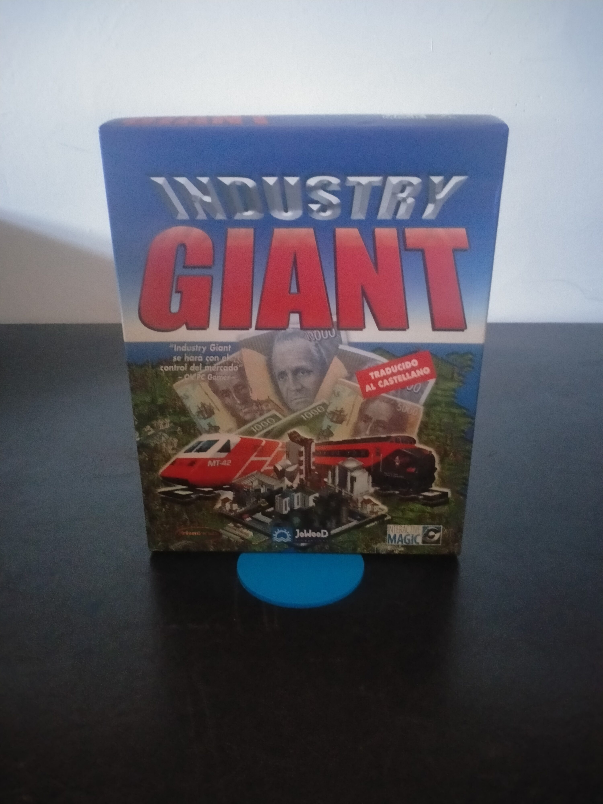

Ficha #000121
Industry Giant
Industry Giant es un simulador económico y de gestión empresarial desarrollado por JoWooD Productions y publicado internacionalmente por Interactive Magic a finales de los años noventa. El juego propone construir un imperio industrial desde la extracción y compra de materias primas hasta la fabricación, transporte y venta de productos en el mercado, obligando al jugador a equilibrar cadenas de suministro, localización de industrias, competencia, logística, precios y demanda. Su planteamiento se sitúa dentro de la tradición de los tycoon y simuladores empresariales de PC, con una estructura orientada a planificación económica, expansión progresiva y optimización de redes de producción. Esta edición española en caja grande, distribuida por Friendware y traducida al castellano, conserva interés documental por representar la llegada al mercado español de una de las sagas económicas europeas más reconocibles del periodo Windows 95.
- Formato
- Big Box
- Plataforma
- Win95 Win98
- Género
- Simulación económica Gestión Estrategia empresarial Construcción y gestión Tycoon
- Serie
- Todos Big Box
- Desarrollador
- JoWooD Productions
- Distribuidor
- Interactive Magic, Friendware
- EAN
- —
Contenido de la edición
- Caja Big Box
- CD-ROM en caja jewel case
- Manual de instrucciones en castellano
- Tarjeta de registro Friendware
Preservación
- Protección
- No determinado
- Formato recomendado
- ISO
- Jugable en virtualización
- Sí
Edición en CD-ROM. Para preservación se recomienda crear imagen completa del disco original, documentar el contenido de la caja y conservar digitalizados el manual y la tarjeta de registro. La ejecución virtual debería verificarse en un entorno Windows 95/98 o equivalente, manteniendo la imagen montada si la edición realiza comprobación de disco.